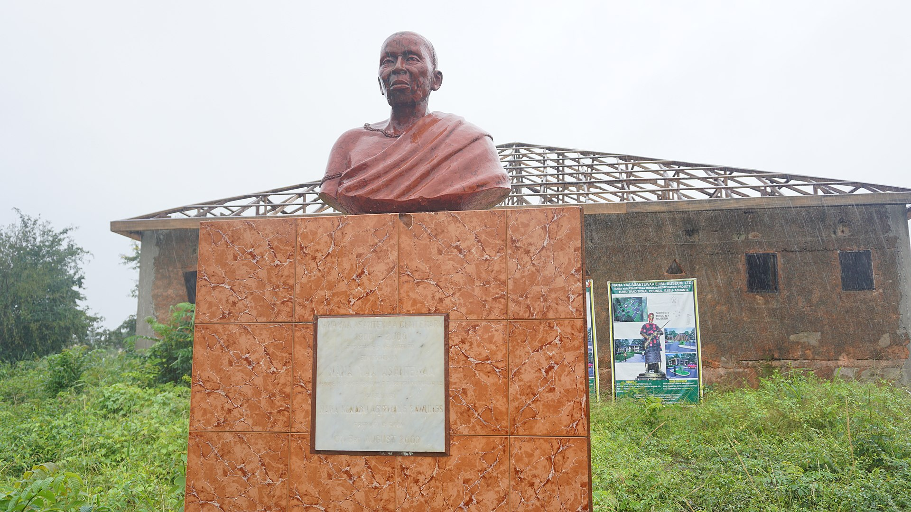

Yaa Asantewaa was born in 1840 in Besease, the daughter of Kwaku Ampoma and Ata Po. Her brother, Afrane Panin, became the chief of Edweso, a nearby community. After a childhood without incident, she cultivated crops on the land around Boankra. She entered a polygamous marriage with a man from Kumasi, with whom she had a daughter. She died in exile in the Seychelles in 1921. She was a successful farmer and mother. She was an intellectual, a politician, a human rights activist, a queen and a war leader. Yaa Asantewaa became famous for commanding the Ashanti Kings in the War of the Golden Stool, against British colonial rule, to defend and protect the sovereign independence of the Golden Stool.
